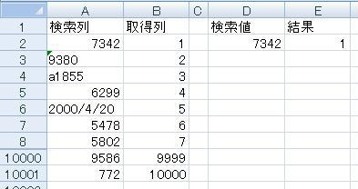
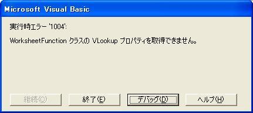

第26回.WorksheetFunctionについて
エクセルで顧客管理を作ります、
今回は、予告通り、期待を裏切らずに、誰も期待してないかもしれないけど（笑）、
やります・・・WorksheetFunctionについてです。
VBAをやれば、必ず使用することになるでしょう。
と言いますか、これを使わないと、エクセルの意味がなくなっちゃいますので。
まあ、関数あってのエクセルですし、関数無けりゃ、ただの作文用紙です。（笑）
ということで、実際に、その関数をVBAで使用して、いろいろ検証してみます。
使用する関数は、VLOOKUPです。
最もよく使う関数の１つですし、作成中のエクセルでも使用しています。
以下の表を使用しました、10000行あります。

まず、以下で実行しました。
Sub test1()
Range("E2") =
Application.WorksheetFunction.VLookup(Range("D2"), Range("A2:B10001"), 2,
False)
End Sub
上の画像のように、検索値があれば何も問題はありません。
しかし、存在しない検索値を指定すると、

となってしまいます、これでは困ります。
ではどうするか、一番簡単なのは、
Sub test2()
On Error Resume Next
Range("E2") =
Application.WorksheetFunction.VLookup(Range("D2"), Range("A2:B10001"), 2,
False)
If Err Then
Range("E2") = "なし"
End If
On Error GoTo
0
End Sub
このように、On Errorでエラーを回避します。
On Error Resume Nextは、エラーが発生しても、次のステップに進みます。
そこで、If Errで、エラーがあったかを判定しています。
では次はどうでしょうか。
Sub test3()
Dim str As String
str =
Range("D2")
Range("E2") = Application.WorksheetFunction.VLookup(str,
Range("A2:B10001"), 2, False)
End Sub
上の表で、検索値が7342であっても、エラーが発生します。
str As Stringにいれているので、型違いで、不一致になります。
この場合は、Variant型に入れる必要があります。
もちろん、この例であれば、数値型でも大丈夫です。
ではでは、これはどうでしょうか。
Sub test4()
Dim rtn
Range("E2") =
Application.VLookup(Range("D2"), Range("A2:B10001"), 2, False)
End
Sub
On Errorがありませんが・・・
これはエラーになりません。
Application.WorksheetFunctionはExcel97からです。
Excel97より前の記述ですが、最新の関数も使えます。
（私は近年まで、これを使っていました。）
ワークシートでVLOOKUPを使って、検索値がない場合と同様に、「#N/A」が返されます。
ですから、全く同一と言う訳ではありません。
しかし、あまり使用はお勧めできません。
WorksheetFunctionクラス（１つのクラスです）を使用するべきだと思います。
エラー回避方法として、以下の方法もあります。
Sub test5()
Dim rtn
Set rtn =
Range("A2:A10001").find(Range("D2"))
If rtn Is Nothing
Then
Range("E2") = "なし"
Else
Range("E2") =
Application.WorksheetFunction.VLookup(Range("D2"), Range("A2:B10001"), 2,
False)
End If
End Sub
非常にスマートなコードだと思います。
「可読性」も良いように思います。
ただ、Findは、少し処理速度が遅いようです、あくまで、Rangeのメソッドですので。
しかし、それは、VLookUpに比べてのことです。
実際に使用するにあたっての問題にはなりません。
5つのパターンを示しましたが、検索値に、9380として実行すると、検索されません。
検索列の9380のセルは文字列になっているのです。
文字列と数値の比較では、例え見た目が同じでも、不一致をおこします。
どちらも、数値である事が分かっていれば、いろいろ対処方法もあると思いますが、
上の表のように、数値・文字が混在の場合の場合に、
見た目の数値でも検索したい場合は、少し難しい事になります。
以下に、それを対処するコードのサンプルを示します。
Sub test6()
Dim rtn
Dim ary As Variant
Dim var As
Variant
Dim i As Long
ary = Range("A2:B10001")
var =
Range("D2").Value
rtn = ""
For i = LBound(ary, 1) To UBound(ary,
1)
Select Case True
Case IsNumeric(ary(i, 1)) And
IsNumeric(var)
If CDbl(ary(i, 1)) = CDbl(var) Then
rtn =
ary(i, 2)
Exit For
End If
Case IsDate(ary(i,
1)) And IsDate(var)
If CDate(ary(i, 1)) = CDate(var)
Then
rtn = ary(i, 2)
Exit For
End
If
Case Else
If CStr(ary(i, 1)) = CStr(var)
Then
rtn = ary(i, 2)
Exit For
End
If
End Select
Next
If rtn = "" Then
Range("E2") =
"なし"
Else
Range("E2") = rtn
End If
End
Sub
あくまで１例です、記述方法はいろいろ考えられます。
数値、日付、文字の３パターンに対応させています。
ブール型等もあり、これでも完全ではありませんが、通常はこれでなんとかなるでしょう。
Cdblは、倍精度浮動小数点実数型への型変換をする関数です。
Cdateは、日付型へのデータ変換をする関数です。
型変換をする関数は、データ型毎に存在します。
まあ数値として比較するだけなら、Cdblで通常は十分ですよね。
処理速度は？との疑問もでますが、
Test5のFindとほぼ同程度の処理速度です。（1000ループで計測しました。）
以前にも解説しましたが、配列に入れての処理は、セルの直接操作よりはるかに高速です。
通常に使用する場合は、test2かtest5になるでしょう。
型の問題があるなら、test6のように、配列を使って処理する事を考える必要があります。
もちろん、元のシートを正しく編集することが王道だとは思います。
しかし、外部データを受け取っての自動処理の場合は、いろいろ工夫する必要が出てきます。
WorksheetFunctionには、ワークシートで使用できる関数の大部分が入っています。
あくまで大部分です、全てではありません。
何が無いかと言うと・・・よく分かりません。
例えば、OFFSETなどは無いようです。
もっとも、VBAではRangeにOffseプロパティもありますし、ロジックで対応できるので必要ありません。
もちろん、Marchは使えます。
Matchは、VLookUpと同様に、検索値が無いとエラーになりますので、同様のエラー処理が必要です。
使用方法は同じなので、直ぐに理解できると思います。
WorksheetFunctionは、間違いなく処理速度は速いです。
これを活用しない手はありません。
今回はこの辺までにして、次回はどうしましょうか。
もう１回くらい、復習をかねて、何かやりましょうかね。
同じテーマ「エクセル顧客管理」の記事
第23回.納品書を作成、商品情報を取得(1)
第24回.納品書を作成、商品情報を取得(2)
第25回.納品書を作成、商品情報を取得(3)
第26回.WorksheetFunctionについて
第27回.RangeとCellsの深遠
第28回.納品書データをデータベース化(1)
第29回.納品書データをデータベース化(2)
第30回.配列の使い方について
第31回.売上一覧（伝票合計の一覧）を作成(1)
第32回.売上一覧（伝票合計の一覧）を作成(2)
第33回.売上一覧より納品書を作成
新着記事NEW ・・・新着記事一覧を見る
VBA100本ノック 100本目：WEBから100本ノックのリストを取得｜VBA練習問題（3月3日）
VBA100本ノック 99本目：自動席替え（行列と前後左右が全て違うように）｜VBA練習問題（3月2日）
VBA100本ノック 98本目：席替えルールが守られているか確認｜VBA練習問題（3月1日）
VBA100本ノック 97本目：Accessデータを取得（グループ集計）｜VBA練習問題（2月27日）
VBA100本ノック 96本目：Accessデータを取得（マスタ結合&抽出）｜VBA練習問題（2月26日）
VBA100本ノック 95本目：図形のテキストを検索するフォーム作成｜VBA練習問題（2月24日）
VBA100本ノック 94本目：表範囲からHTMLのtableタグを作成｜VBA練習問題（2月23日）
VBA100本ノック 93本目：複数ブックを連結して再分割｜VBA練習問題（2月22日）
VBA100本ノック 92本目：セルの色を16進で返す関数｜VBA練習問題（2月20日）
VBA100本ノック 91本目：時間計算（残業時間の月間合計）｜VBA練習問題（2月19日）
アクセスランキング ・・・ ランキング一覧を見る
1.最終行の取得（End,Rows.Count）｜VBA入門
2.RangeとCellsの使い方｜VBA入門
3.変数宣言のDimとデータ型｜VBA入門
4.マクロって何？VBAって何？｜VBA入門
5.Range以外の指定方法（Cells,Rows,Columns）｜VBA入門
6.セルのコピー&値の貼り付け（PasteSpecial）｜VBA入門
7.繰り返し処理（For Next)｜VBA入門
8.セルに文字を入れるとは（Range,Value）｜VBA入門
9.マクロはどこに書くの（VBEの起動）｜VBA入門
10.とにかく書いてみよう（Sub,End Sub）｜VBA入門
このサイトがお役に立ちましたら「シェア」「Bookmark」をお願いいたします。
記述には細心の注意をしたつもりですが、
間違いやご指摘がありましたら、「お問い合わせ」からお知らせいただけると幸いです。
掲載のVBAコードは動作を保証するものではなく、あくまでVBA学習のサンプルとして掲載しています。
掲載のVBAコードは自己責任でご使用ください。万一データ破損等の損害が発生しても責任は負いません。